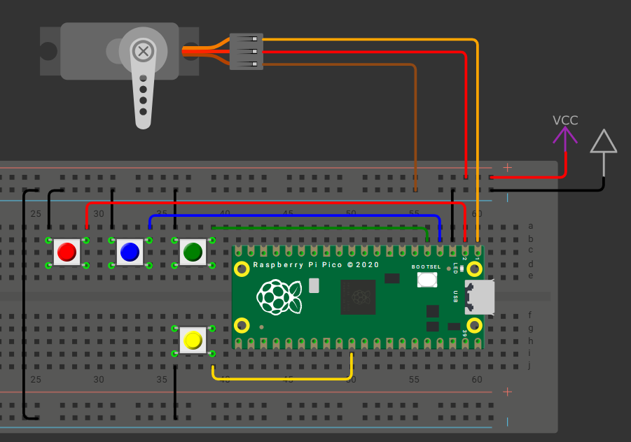

📚 Examen 2
Introducción
- Nombre del proyecto: Control de un Servomotor
- Equipo / Autor(es): Rodrigo Miranda Flores
- Curso / Asignatura: Sistemas embebidos 1
- Fecha: 22/09/2025
- Descripción breve: En este apartado se muestra mi segundo examen sobre el control de Servomotores con comandos.
Control de Servomotores con comandos
1) Hardware mínimo
-
1 × servomotor en un pin PWM (50 Hz).
-
3 × botones:
-
BTN_MODE: cambia el modo activo (cíclico: Entrenamiento → Continuo → Step → …).
-
BTN_NEXT: avanza a la siguiente posición (sólo en Step).
-
BTN_PREV: retrocede a la posición anterior (sólo en Step).
- Pi pico 2
2) Que debe hacer:
Modo Entrenamiento
-
Se recibe texto por USB-serial con los comandos siguientes (se aceptan minúsculas/mayúsculas indistintamente y también sus alias en inglés):
-
Borrar (alias: clear, borrar)
-
Sintaxis: Borrar
-
Efecto: elimina la lista completa de posiciones.
-
Respuesta: OK.
Escribir (alias: write, escribir)
-
Sintaxis: Escribir, v1, v2, ..., vn
-
vi son enteros en 0–180.
-
fecto: sobrescribe la lista con los valores dados en ese orden.
- Respuesta: OK si todos son válidos y la lisa de posiciones; si alguno está fuera de rango o la lista queda vacía → Error argumento invalido.
Reemplazar (alias: replace, reemplazar)
-
Sintaxis: Reemplazar, i, v
-
Índice i en base 1 (1 = primera posición).
-
v en 0–180.
-
Efecto: reemplaza el elemento i por v.
-
Respuesta: OK. Si i no existe → Error indice invalido. Si v fuera de rango → Error argumento invalido.
Modo Continuo - Recorre todas las posiciones de la lista en orden, moviendo el servo e imprimiendo cada 1.5 s:
-
Formato: posX: V (por ejemplo, pos1: 90), donde X es base 1.
-
Si la lista está vacía: imprimir cada 1.5 s Error no hay pos y no mover el servo.
-
Al cambiar a otro modo, el ciclo se detiene inmediatamente.
Modo Step - BTN_NEXT: avanza una posición (si ya está en la última, se mantiene en esa última).
-
BTN_PREV: retrocede una posición (si ya está en la primera, se mantiene en la primera).
-
En cada cambio de posición:
-
mover el servo a la posición seleccionada;
-
imprimir posX: V.
-
Si la lista está vacía: al presionar BTN_NEXT o BTN_PREV, imprimir Error no hay pos y no mover el servo.
INFO IMPORTANTE: El movimiento de un servo requiere alimentacion 5-6v y en el pin de signal, un pwm a 50 HZ con un pulso de 1-2ms que representa 0-180 grados.
3) Codigo:
#include <stdio.h>
#include "pico/stdlib.h"
#include "hardware/pwm.h"
#include <string>
using namespace std;
// CONFIGURACIÓN UART Y PINES
#define UART_ID uart0
#define BAUD_RATE 115200
#define UART_TX_PIN 0
#define UART_RX_PIN 1
#define SERVO_PIN 2
const uint BTNMODE = 3;
const uint BTNNEXT = 4;
const uint BTNPREV = 5;
// VARIABLES GLOBALES
int valores_guardados[10] = {0};
int cantidad_posiciones = 0;
void borrar_lista() {
for (int i = 0; i < 10; i++) valores_guardados[i] = 0;
cantidad_posiciones = 0;
printf("OK. Lista borrada.\n");
}
uint16_t angle_to_level(uint16_t angle) {
float pulse_us = 1000.0f + (angle * 1000.0f / 180.0f);
return (uint16_t)((pulse_us / 20000.0f) * 65535);
}
// PROGRAMA PRINCIPAL
int main() {
stdio_init_all();
sleep_ms(2000);
printf("Modo de entrenamiento activado\n");
printf("Comandos: escribir, reemplazar, borrar\n");
// UART
uart_init(UART_ID, BAUD_RATE);
gpio_set_function(UART_TX_PIN, GPIO_FUNC_UART);
gpio_set_function(UART_RX_PIN, GPIO_FUNC_UART);
uart_set_format(UART_ID, 8, 1, UART_PARITY_NONE);
uart_set_fifo_enabled(UART_ID, true);
// PWM (Servo)
gpio_set_function(SERVO_PIN, GPIO_FUNC_PWM);
uint slice = pwm_gpio_to_slice_num(SERVO_PIN);
uint chan = pwm_gpio_to_channel(SERVO_PIN);
pwm_set_wrap(slice, 65535);
float f_clk = 125000000.0f;
float div = f_clk / (50.0f * 65536.0f);
pwm_set_clkdiv(slice, div);
pwm_set_enabled(slice, true);
// Botones
gpio_init(BTNMODE); gpio_set_dir(BTNMODE, GPIO_IN); gpio_pull_up(BTNMODE);
gpio_init(BTNNEXT); gpio_set_dir(BTNNEXT, GPIO_IN); gpio_pull_up(BTNNEXT);
gpio_init(BTNPREV); gpio_set_dir(BTNPREV, GPIO_IN); gpio_pull_up(BTNPREV);
string mensaje_usb = "";
int modo_index = 0;
int modo_actual = 1; // 1=Entrenamiento, 2=Continuo, 3=Step
bool btnmode_presionado = false, btnnext_presionado = false, btnprev_presionado = false;
bool ciclo_activo = false;
while (true) {
// LECTURA USB
int ch = getchar_timeout_us(0);
if (ch != PICO_ERROR_TIMEOUT) {
if (ch == '\n' || ch == '\r') {
if (!mensaje_usb.empty()) {
string comando = mensaje_usb;
mensaje_usb = "";
// BORRAR
if (comando == "borrar" || comando == "clear" || comando == "Borrar" || comando == "Clear") {
borrar_lista();
}
// ESCRIBIR
else if (comando == "escribir" || comando == "write" || comando == "Escribir" || comando == "Write") {
printf("Ingresa valores separados por comas (ej: 10,45,90,... máx 10):\n");
string entrada_valores = "";
while (true) {
int c2 = getchar_timeout_us(0);
if (c2 != PICO_ERROR_TIMEOUT) {
if (c2 == '\n' || c2 == '\r') break;
entrada_valores += (char)c2;
}
}
// Procesar entrada
int i = 0; string temp = ""; bool error = false;
for (char c : entrada_valores) {
if (c == ',') {
if (i < 10) {
int val = stoi(temp);
if (val < 0 || val > 180) { error = true; break; }
valores_guardados[i++] = val;
temp = "";
} else { error = true; break; }
} else temp += c;
}
if (!temp.empty() && i < 10) {
int val = stoi(temp);
if (val < 0 || val > 180) error = true;
else valores_guardados[i++] = val;
}
cantidad_posiciones = i;
if (cantidad_posiciones < 1 || cantidad_posiciones > 10) {
printf("Cantidad de posiciones invalida\n");
borrar_lista();
} else if (error) {
printf("Error argumento invalido\n");
borrar_lista();
} else {
printf("OK. Lista: ");
for (int j = 0; j < cantidad_posiciones; j++) {
printf("%d%s", valores_guardados[j], (j < cantidad_posiciones-1) ? ", " : "\n");
}
}
}
// REEMPLAZAR
else if (comando == "reemplazar" || comando == "replace" || comando == "Reemplazar" || comando == "Replace") {
printf("Formato: reemplazar,i,v (ej: 2,130)\n");
string entrada_replace = "";
while (true) {
int c2 = getchar_timeout_us(0);
if (c2 != PICO_ERROR_TIMEOUT) {
if (c2 == '\n' || c2 == '\r') break;
entrada_replace += (char)c2;
}
}
int pos=-1, val=-1; string temp=""; bool sep=false;
for (char c : entrada_replace) {
if (c == ',' && !sep) { pos = stoi(temp)-1; temp=""; sep=true; }
else temp+=c;
}
if (sep && !temp.empty()) val = stoi(temp);
if (pos<0 || pos>=cantidad_posiciones) printf("Error indice invalido\n");
else if (val<0 || val>180) printf("Error argumento invalido\n");
else {
valores_guardados[pos]=val;
printf("OK. pos%d = %d\n", pos+1, val);
}
}
else {
printf("Comando no reconocido\n");
}
}
} else mensaje_usb += (char)ch;
}
// LECTURA BOTONES
bool bmode = gpio_get(BTNMODE)==0;
bool bnext = gpio_get(BTNNEXT)==0;
bool bprev = gpio_get(BTNPREV)==0;
// CAMBIO DE MODO
if (bmode && !btnmode_presionado) {
modo_actual++;
if (modo_actual > 3) modo_actual = 1;
printf("Cambio a modo %d\n", modo_actual);
ciclo_activo = (modo_actual == 2);
btnmode_presionado = true;
} else if (!bmode) btnmode_presionado = false;
// MODO 2: CONTINUO
if (modo_actual == 2 && ciclo_activo) {
if (cantidad_posiciones < 1) {
printf("Error no hay pos\n");
sleep_ms(1500);
} else {
for (int i=0; i<cantidad_posiciones; i++) {
pwm_set_chan_level(slice, chan, angle_to_level(valores_guardados[i]));
printf("pos%d: %d\n", i+1, valores_guardados[i]);
for (int t=0; t<15; t++) {
sleep_ms(100);
if (modo_actual != 2) break;
}
if (modo_actual != 2) break;
}
}
}
// MODO 3: STEP
if (modo_actual == 3) {
if (cantidad_posiciones < 1) {
if (bnext || bprev) printf("Error no hay pos\n");
} else {
if (bnext && !btnnext_presionado) {
if (modo_index < cantidad_posiciones-1) modo_index++;
pwm_set_chan_level(slice, chan, angle_to_level(valores_guardados[modo_index]));
printf("pos%d: %d\n", modo_index+1, valores_guardados[modo_index]);
btnnext_presionado = true;
} else if (!bnext) btnnext_presionado = false;
if (bprev && !btnprev_presionado) {
if (modo_index > 0) modo_index--;
pwm_set_chan_level(slice, chan, angle_to_level(valores_guardados[modo_index]));
printf("pos%d: %d\n", modo_index+1, valores_guardados[modo_index]);
btnprev_presionado = true;
} else if (!bprev) btnprev_presionado = false;
}
}
sleep_ms(10);
}
}
4) Esquematico de conexion: 
5) Video: